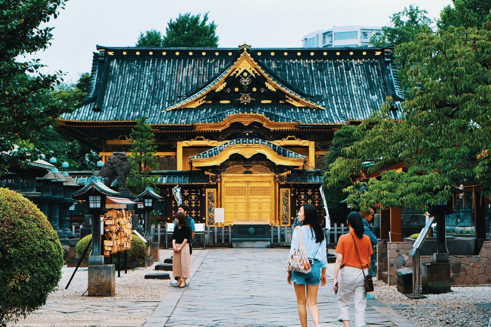
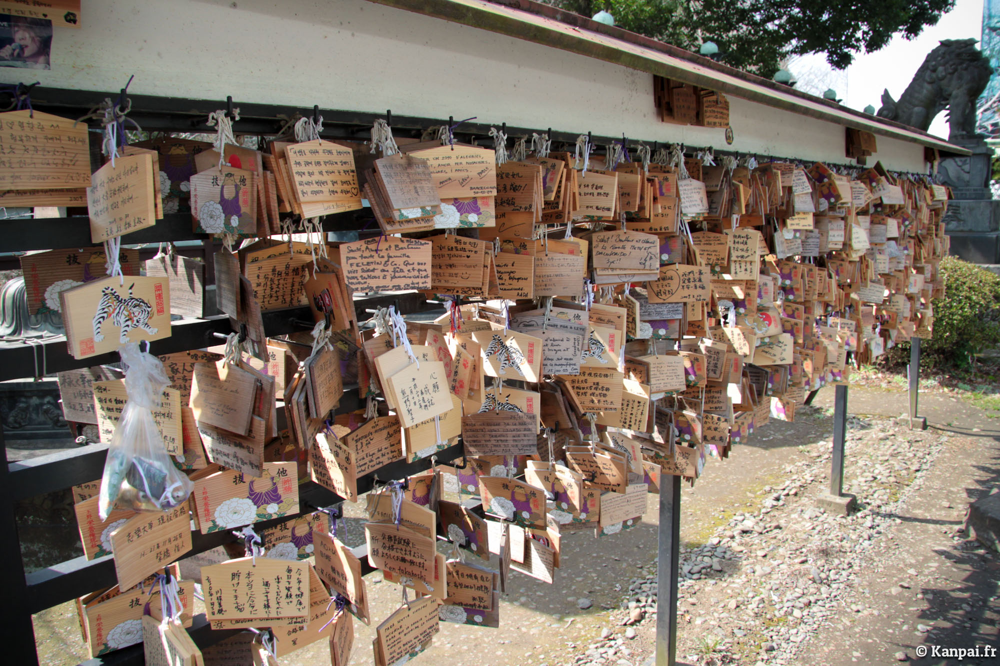
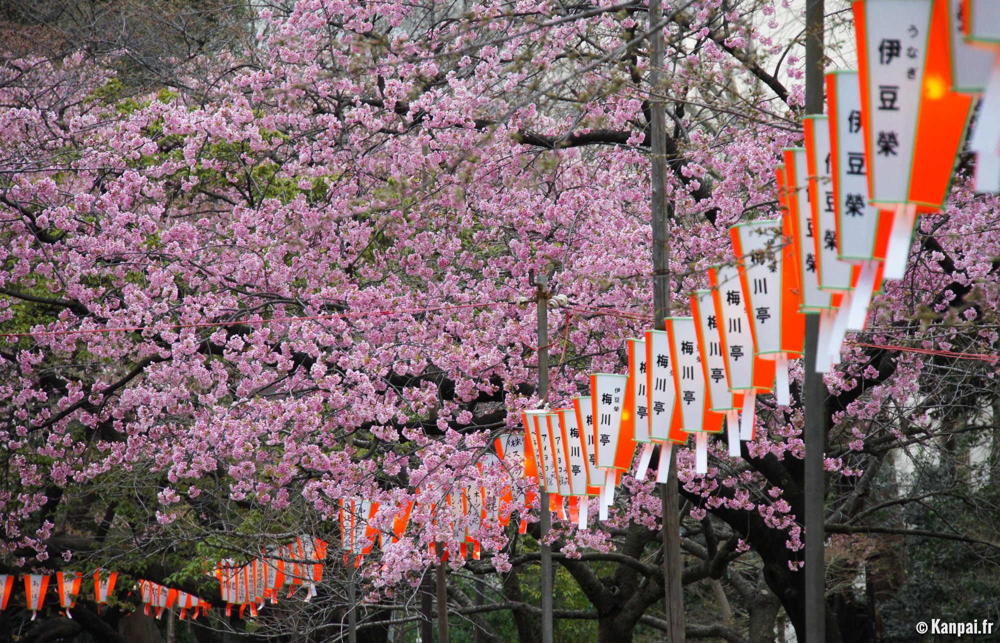
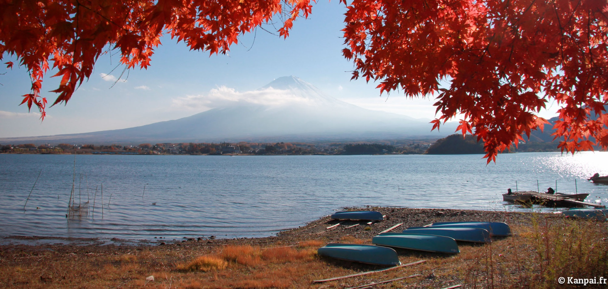
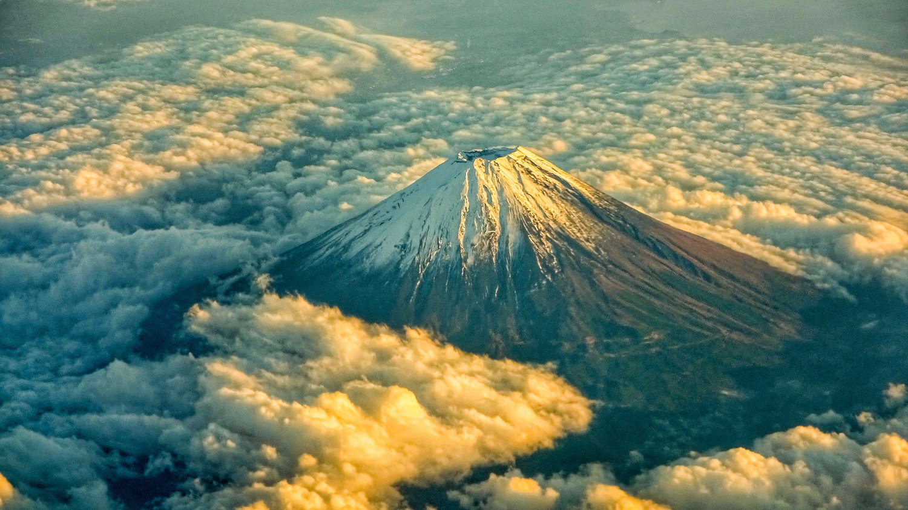
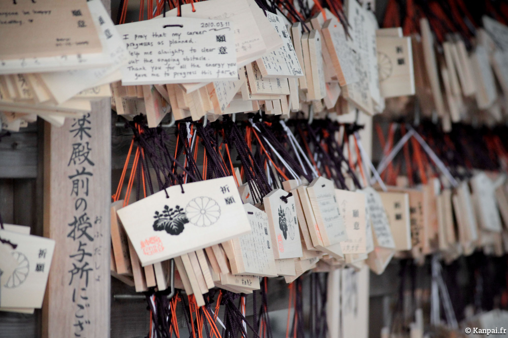

Découvrez le Japon avec moi !
Découvrez le Sanctuaire Meiji-Jingu
Découvrez ma présentation
Parc Ueno, et ses sublimes Sakura

Le parc de Ueno est un vaste jardin public situé dans l'arrondissement de Taito, au nord-est de Tokyo. Comprenant notamment un étang, un zoo ainsi que plusieurs musées et temples, la balade à travers le parc constitue une attraction majeure de la capitale, encore plus au printemps où les allées rosissent à la floraison des cerisiers.
Non content d'agir comme la pierre angulaire de Ueno, son grand parc héberge une quantité impressionnante d'attractions plus ou moins touristiques. Il faut dire que sa surface impressionnante (près de 54 hectares) couvre tout le cœur du quartier et abrite des lieux parfois inattendus, qui en font probablement l'un des plus populaires de Tokyo. Ouvert depuis 1873, on estime que plus de dix millions de promeneurs l'arpentent chaque année.

Car le parc de Ueno n'agit pas comme ses confrères de la capitale avec des étendues d'herbe à perte de vue. Ici, les zones à la surface bétonnée sont probablement les plus nombreuses pour distribuer sur :
- des temples et sanctuaires (dont les Toshogu, Tenmangu, Kaneiji, Bentendo et même une représentation du Kiyomizu Kyotoïte avec le Kannon-do et son Tsuki no Matsu (Pin de la Lune) fort original) ;
- plusieurs grands Musées Nationaux, de larges galeries d'expositions artistiques ainsi qu'une salle de spectacle ;
- l'immense et fameux étang Shinobazu ;
- ou encore, un grand parc zoologique qui occupe 10% de sa superficie.
Mais c'est peut-être en début de printemps, pour la floraison des cerisiers japonais que le parc se transforme. Il devient alors l'un des spots Sakura* les plus courus et appréciés de Tokyo, où les rangées d'arbres (1.200 au total) teintés d'un rose éclatant surplombent les inévitables bâches bleues sur lesquelles les Japonais passent un bon moment et parfois s'enivrent.
*Sakura est le mot japonais qui correspond aux cerisiers du Japon et à leurs fleurs. Parmi les nombreuses variétés, le cerisier blanc légèrement rosé somei yoshino est le plus répandu. Les sakura ont une présence très forte dans la société et la culture japonaise ; leur floraison au printemps est célébrée à travers tout l'archipel (on appelle cela hanami ou ohanami) et offre des paysages absolument superbes.

| Ville | Aomori | Sendai | Tokyo | Kyoto | Osaka | Hiroshima |
|---|---|---|---|---|---|---|
| Début estimé | 19 Avril | 31 Mars | 15 Mars | 19 Mars | 23 Mars | 19 Mars |
| Pic estimé | 23 Avril | 6 Avril | 23 Mars | 28 Mars | 30 Mars | 29 Mars |
Le Mont Fuji
Kawaguchiko est l'un des cinq lacs entourant le Mont Fuji, localisé dans la ville de Fujikawaguchiko au sein de la préfecture de Yamanashi. Situé au nord de la montagne sacrée, la vue sur le Fuji-san y est imprenable et fait des abords de cette étendue d'eau une destination touristique privilégiée.
Gravir le Mont Fuji ne dispense pas d'en visiter ses environs. À son pied on trouve un ensemble de cinq lacs, appelés naturellement Fujigoko, dont les plus célèbres sont certainement Kawaguchi et Ashi (avec Hakone). Nous avons passé une journée autour du premier mi-novembre, au moment de la floraison des érables rouges du Japon : les momiji.

Le Mont Fuji est une montagne japonaise en forme de cône volcanique située sur l'île principale de Honshu, à cheval sur les préfectures de Shizuoka et Yamanashi, à 100 kilomètres au sud-ouest de Tokyo. Point culminant du Japon avec 3.776 mètres d'altitude, le Fuji-san est également l'un des symboles majeurs de l'archipel.
Situé non loin de Tokyo, il est une destination appréciée des voyageurs au Japon que ce soit pour en faire l'incroyable ascension (comme un pélerinage accessible même aux randonneurs peu expérimentés) ou plus simplement profiter de ses paysages environnants.
On y va ?

Pendant l'ascension du Mont Fuji, plus on prend de l’altitude, plus la température baisse. Préparez-vous en conséquence et emportez des vêtements chauds (très chauds, même). Essayez cependant de vous organiser de manière à randonner léger. Un sac à dos et l'essentiel à l'intérieur pour être efficace.
- chaussures de marche adaptées
- coupe-vent ou parka
- vêtements de pluie
- lunettes de soleil
- en-cas (onigiri, fruits secs, bentô tout entier)
| Piste | Période d'ouverture |
|---|---|
| Sentier Yoshida (Pref. Yamanashi) |
1 Juillet - 10 Septembre |
| Sentier Subashiri (Pref. Shizuoka) |
10 Juillet - 10 Septembre |
| Sentier Gotemba (Pref. Shizuoka) |
10 Juillet - 10 Septembre |
| Sentier Fujinomiya (Pref. Shizuoka) |
10 Juillet - 10 Septembre |
| Sentier Ohachi-meguri (Pref. Shizuoka) |
10 Juillet - 10 Septembre |
Le sanctuaire Meiji-Jingu
Meiji-jingu est un vaste sanctuaire contigu au parc Yoyogi, dans le quartier de Harajuku, appartenant à l'arrondissement de Shibuya à Tokyo. Prisé des touristes, lieu de cérémonie de mariage traditionnel et endroit populaire pour fêter le nouvel an, ce complexe shintoïste rénové en 2016 reste très fréquenté toute l'année.
Nous avons déjà abordé à plusieurs reprises les poumons de verdure qu'offre Tokyo, l'immense capitale bétonnée, notamment via Shinjuku Gyôen et le parc Yoyogi. C'est justement attenant à ce dernier que se situe Meiji-jingu. On y accède par une vaste allée bordée de fûts de saké.
Il s'agit en réalité d'un immense complexe shintoïste, d'abord via la balade dans le jardin impérial qui y mène (Meiji Jingû Gyôen), après le passage sous le premier grand Torii. Puis la visite se poursuit à travers cette forêt de cent mille arbres, jusqu'au jardin intérieur qui héberge plusieurs mariages traditionnels chaque week-end.
Contrairement à ce que l'on pourrait imaginer, la construction de Meiji-jingu remonte seulement du début du XXe siècle (1920). Il fut édifié en hommage à l'empereur Meiji et à l'impératrice Shoken. Aujourd'hui, le sanctuaire est particulièrement visité pour les festivités du nouvel an, où en moyenne trois millions de Japonais viennent y faire la queue.
Le sanctuaire tient également une place-clé pour les photographes qui souhaitent immortaliser des cérémonies de mariage shinto, ou tout simplement pour les visiteurs curieux.

Une fois dans l’enceinte du Meiji-jingu, des poèmes waka, forme de poésie japonaise, composés par l’empereur et sa femme, sont offerts aux visiteurs. Des formulaires de kikanbun, lettres aux divinités (kami), et des ema, tablettes en bois porteuses de vœux, sont à la disposition de tous, moyennant une contribution pour les ema, avant d’être récupérés par les prêtres, qui adressent ensuite les messages aux kaki.
Le Meiji-jingu est un lieu religieux encore en activité aujourd’hui et où il n’est pas rare d’assister à des mariages. Certains principes d’étiquette valent d’y être respectés comme la purification du corps avec l’eau ou le salut au torii et peuvent être consultés sur le site officiel du sanctuaire (en anglais). Le Meiji-jingu est agréable à visiter en semaine car assez calme et peu fréquenté comparé aux temples tokyoïtes comme le Sensô-ji.
Votre guide !

Ohayo Gozaimasu !
Une grande fan du Japon.
J'espère que grâce à ce site, je vous aurai fait rêver avec moi ! Un but, un rêve.
Arigato Gozaimashita !